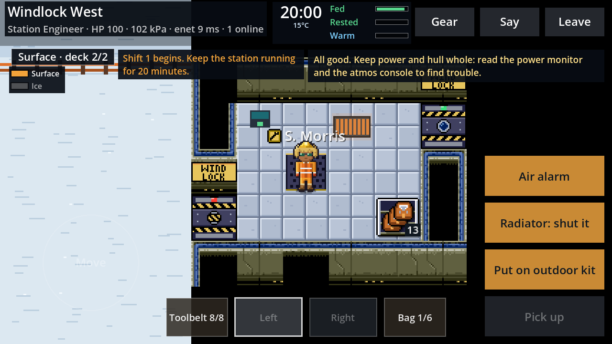

Maps
Three stations are playable: the space station Heron, the underwater station Millrace and the polar station Cairn; the lobby votes between them before every shift and the phones load the winner. Each plan below is one picture: tap it to open it full size, then pinch to zoom. Every room is named on the plan and listed under it.
Heron Station

The orbital relay everyone plays on: white hull, solar arrays on a truss, stars through the windows. It is weightless outside the tubes: crew float from tile to tile, holding the handrails along the walls. It has 75 rooms and the crew-transfer shuttle docks at its Docking Port.

The rooms
- Heron Station: Central Hub, Bar, Botanics, North Transit Tube, East Transit Tube, South Transit Tube, West Transit Tube, Science Transit Tube, Security Transit Tube, Power Transit Tube, Quarters Transit Tube, Bridge, Captain's Office, Head of Personnel's Office, Head of Personnel's Bedroom, Medical Reception, Medbay, Surgery, Chemistry, Research and Development, Robotics, Genetics, Security Office, Law Office, Brig, Cargo Entrance, Cargo Reception, Cargo Storage Bay, Main Airlock and Docking Port, Mining Dock, Janitor's Closet, Engineering Hall, Atmospherics, Machine Workshop, Electrical Workshop, Construction Workshop, Battery Room, Inverter Room, Transformer Room, Solar Control, EVA Airlock, Crew Quarters, Restroom, Library, Chapel, Maint. Tunnels by Robotics, Crew-Transfer Shuttle, Cell 1, Kitchen, Morgue, EVA Airlock 2, EVA Pod, High-Voltage Kiosk, Captain's Bedroom, Captain's Restroom, Toxins Laboratory, Maint. Tunnels by Solar Control, Maint. Tunnels by Bridge, Maint. Tunnels by Power Tube, Maint. Tunnels by EVA Airlock 2, Maint. Tunnels by Hub, Maint. Tunnels by Atmospherics, Maint. Tunnels by Chemistry, Maint. Tunnels by Quarters Tube, Maint. Tunnels by West Tube, Maint. Tunnels by East Tube, Maint. Tunnels by South Tube, Maint. Tunnels by Restroom, Maint. Tunnels by Cargo Reception, Maint. Tunnels by Cargo Storage, Maint. Tunnels by Janitor, Armory, Mining Shuttle, Cell 2, Cell 3.
Departments (floors are tinted, doors are banded) bar kitchen botanics security science medical cargo command engineering public maintenance tunnel door
Floors hallway or tube maintenance tunnels window solar panels power panel
Machines amber badges: REQ request console, ORD order console, PAD delivery pad, FIL filing cabinet, CRW crew monitor, PWR power monitor, ATM atmos console, RAT ration dispenser, JOB job board, TAC tactical table, ID id console, AIR air tank filling point, MAN tank charging manifold, CYL gas cylinder port, PRS scrap press, SRV hull survey board, O2 oxygen tank, N2 nitrogen tank, CO2 co2 store, EMB ember-gas store, MIX mixer, PRC waste processor, BRN burner, COL waste collector, RCY recycler, ARR array console, BAT battery console, INV inverter console, TRF transformer, SWG switchgear, CRN gantry crane, CTL charge controller, CEL battery cell, MOD inverter module, BRK breaker.
The rooms as a table
| Room | What is there | Who gets in |
|---|---|---|
| Central Hub | the ration dispenser, the job board, 10 benches, 26 seats, 10 tables | everyone |
| Bar | where the Bartender starts, 4 racks, 3 tables, a bar mixer | Bartender and Crew Member (bar access) |
| Botanics | where the Botanist starts, 3 racks, 10 planting trays, 2 props | Botanist (botanics access) |
| North Transit Tube | 1 service window with roll shutters, 2 benches | everyone |
| East Transit Tube | — | everyone |
| South Transit Tube | — | everyone |
| West Transit Tube | — | everyone |
| Science Transit Tube | — | everyone |
| Security Transit Tube | 1 service window with roll shutters | everyone |
| Power Transit Tube | — | everyone |
| Quarters Transit Tube | — | everyone |
| Bridge | the tactical table and 3 console repeaters, 8 tables, 20 seats, 2 props, a locked closet (command access) | Head of Personnel (command access) |
| Captain's Office | where the Captain starts, 2 props, 3 seats, 2 tables | Head of Personnel (command access) |
| Head of Personnel's Office | 1 service window with roll shutters, the ID console, where the Head of Personnel starts, a seat, a prop, a table, a locked prop (command access) | Head of Personnel (command access) |
| Head of Personnel's Bedroom | 2 tables, 2 seats, a locked closet (command access) | Head of Personnel (command access) |
| Medical Reception | 3 service windows with roll shutters, 6 benches | everyone |
| Medbay | 2 service windows with roll shutters, the crew monitor, where the Medical Doctor starts, 6 tables, 7 seats, a prop, a locked closet (medical access), a locked cabinet (medical access) | Medical Doctor (medical access) |
| Surgery | 3 props, a seat, a rack | Medical Doctor (medical access) |
| Chemistry | 1 service window with roll shutters, a cabinet, 3 seats, 3 tables, 3 racks | Medical Doctor (medical access) |
| Research and Development | where the Scientist starts, 8 seats, 4 tables | Scientist (science access) |
| Robotics | 2 racks, 4 seats, a table | Scientist (science access) |
| Genetics | 2 tables, 2 seats | Scientist (science access) |
| Security Office | 1 service window with roll shutters, where the Security Officer starts, 3 tables, 3 props, a seat, 2 benches | Security Officer (security access) |
| Law Office | where the Lawyer starts, 3 seats, 2 tables, 4 props | everyone |
| Brig | — | Security Officer (security access) |
| Cargo Entrance | the request console, 1 service window with roll shutters, a seat | everyone |
| Cargo Reception | the order console, the filing cabinet, 1 service window with roll shutters, where the Logistics starts, 3 tables, 2 seats, a prop | Logistics and Miner (cargo access) |
| Cargo Storage Bay | the delivery pad, a locked closet (cargo access) | Logistics and Miner (cargo access) |
| Main Airlock and Docking Port | 4 seats | everyone |
| Mining Dock | where the Miner starts, 2 tables, 4 seats | Logistics and Miner (cargo access) |
| Janitor's Closet | where the Janitor starts, 3 racks | Station Engineer, Miner and Janitor (maintenance access) |
| Engineering Hall | a rack | everyone |
| Atmospherics | the atmos alert console, a seat, 6 racks, 4 tables, 2 closets | Station Engineer (engineering access) |
| Machine Workshop | where the Station Engineer starts, 9 racks, 2 tables, a lathe, a closet | Station Engineer (engineering access) |
| Electrical Workshop | 9 racks, 4 tables, 2 closets, a winding bench | Station Engineer (engineering access) |
| Construction Workshop | 10 racks, 2 tables, a seat, a locked closet (engineering access) | Station Engineer (engineering access) |
| Battery Room | the battery bank (8 cells), a seat, 4 racks | Station Engineer (engineering access) |
| Inverter Room | the 4 inverter modules, 3 racks | Station Engineer (engineering access) |
| Transformer Room | the power monitor, a seat, a rack, 2 closets, 2 tables, 2 props | Station Engineer (engineering access) |
| Solar Control | the array, battery and inverter consoles and the 5 charge controllers, a seat | Station Engineer (engineering access) |
| EVA Airlock | a locked closet (engineering access) | Station Engineer (engineering access) |
| Crew Quarters | where the crew sleeps, 13 seats, 16 closets, 5 tables, 8 benches, a prop | everyone |
| Restroom | 3 seats, a bench, 2 props, a closet | everyone |
| Library | 5 props, 4 seats, 2 tables | everyone |
| Chapel | where the Chaplain starts, 4 benches, 2 tables, a prop | everyone |
| Maint. Tunnels by Robotics | a rack, a closet, a storage crate | Station Engineer, Miner and Janitor (maintenance access) |
| Crew-Transfer Shuttle | 16 seats, no power panel | everyone |
| Cell 1 | a bench, a locked closet (security access) | Security Officer (security access) |
| Kitchen | where the Chef starts, 4 tables, a seat, 2 stoves, a closet, a locked cabinet (kitchen or botanics access) | Chef (kitchen access) |
| Morgue | 5 props | Medical Doctor (medical access) |
| EVA Airlock 2 | — | Station Engineer, Miner and Janitor (maintenance access) |
| EVA Pod | — | Station Engineer (engineering access) |
| High-Voltage Kiosk | the transformer, the switchgear (4 breakers) and the gantry crane, 2 racks | Station Engineer (engineering access) |
| Captain's Bedroom | a seat, a locked closet (command access) | Head of Personnel (command access) |
| Captain's Restroom | a prop, a seat | Head of Personnel (command access) |
| Toxins Laboratory | 2 seats, 2 tables | Scientist (science access) |
| Maint. Tunnels by Solar Control | a storage crate | Station Engineer, Miner and Janitor (maintenance access) |
| Maint. Tunnels by Bridge | a closet, a rack | Station Engineer, Miner and Janitor (maintenance access) |
| Maint. Tunnels by Power Tube | a storage crate, a closet, a rack | Station Engineer, Miner and Janitor (maintenance access) |
| Maint. Tunnels by EVA Airlock 2 | a rack, a storage crate | Station Engineer, Miner and Janitor (maintenance access) |
| Maint. Tunnels by Hub | a closet, a storage crate | Station Engineer, Miner and Janitor (maintenance access) |
| Maint. Tunnels by Atmospherics | a rack, a closet, a storage crate | Station Engineer, Miner and Janitor (maintenance access) |
| Maint. Tunnels by Chemistry | a rack, a closet, a storage crate | Station Engineer, Miner and Janitor (maintenance access) |
| Maint. Tunnels by Quarters Tube | a storage crate | Station Engineer, Miner and Janitor (maintenance access) |
| Maint. Tunnels by West Tube | a rack | Station Engineer, Miner and Janitor (maintenance access) |
| Maint. Tunnels by East Tube | a closet | Station Engineer, Miner and Janitor (maintenance access) |
| Maint. Tunnels by South Tube | a rack, a storage crate | Station Engineer, Miner and Janitor (maintenance access) |
| Maint. Tunnels by Restroom | a closet, a rack, a storage crate | Station Engineer, Miner and Janitor (maintenance access) |
| Maint. Tunnels by Cargo Reception | a storage crate | Station Engineer, Miner and Janitor (maintenance access) |
| Maint. Tunnels by Cargo Storage | a rack | Station Engineer, Miner and Janitor (maintenance access) |
| Maint. Tunnels by Janitor | a closet | Station Engineer, Miner and Janitor (maintenance access) |
| Armory | a locked closet (all areas access) | Security Officer (security access) |
| Mining Shuttle | 6 seats | Logistics and Miner (cargo access) |
| Cell 2 | a bench, a locked closet (security access) | Security Officer (security access) |
| Cell 3 | a bench, a locked closet (security access) | Security Officer (security access) |
Millrace Station

The deep station: 59 rooms on seven decks about thirty metres under the sea, one department to a deck. From the top: Crown (command), Signal (security, law and communications), Ward (medical), Commons (the hub: quarters, library, chapel), Grow (botany, kitchen, bar and the science labs), Dock (cargo, the moon pool and the Mining Sub) and Keel (engineering: the power chain of the seabed current turbines, the workshops, atmospherics and the dive airlock). The decks are joined by stairs, a lift for carts, a ladder down the moon pool and a cable riser for every pair; a ring of maintenance tunnels inside each hull holds the rooms' power panels and, for the rooms an engineer's card does not open, their remote air alarms. Door bands say the department: orange engineering, light blue medical, dark blue command, red security, yellow cargo, purple science, green botanics, white kitchen, brown bar, grey for everyone.

The decks, top to bottom
- Crown (deck 6), command: Crown Hall, Bridge, Captain's Office, Head of Personnel's Office, Conference Room, Sensor Mast Cupola, Maint. Tunnels by Crown Hall.
- Signal (deck 5), security, law and communications: Signal Hall, Security Office, Communications Room, Brig, Law Office, Records Room, Cell 1, Maint. Tunnels by Signal Hall, Cell 2, Cell 3.
- Ward (deck 4), medical: Ward Hall, Medbay, Surgery, Morgue, Chemistry, Patient Ward, Maint. Tunnels by Ward Hall.
- Commons (deck 3), the hub: quarters, library and chapel: Commons Hub, Crew Quarters, Restroom, Library, Chapel, Crew Lounge, Maint. Tunnels by Commons Hub.
- Grow (deck 2), botany, kitchen, bar and the science labs: Grow Hall, Botanics, Kitchen, Bar, Research and Development, Robotics, Genetics, Toxins Laboratory, Maint. Tunnels by Grow Hall.
- Dock (deck 1), cargo, the moon pool and the mining sub: Dock Hall, Cargo Reception, Cargo Storage Bay, Moon Pool Bay, Janitor's Closet, Mining Dock, Maint. Tunnels by Dock Hall, Mining Sub.
- Keel (deck 0), engineering: the power chain, the workshops, atmospherics and the dive airlock: Maint. Tunnels by Keel Hall, Keel Hall, Battery Room, Inverter Room, Transformer Room, Power Control, Machine Workshop, Dive Airlock, Construction Workshop, Atmospherics, Dive Lock.
Ways between decks
- Stairs S0: Keel to Dock
- Stairs S1: Dock to Grow
- Stairs S2: Grow to Commons
- Stairs S3: Commons to Ward
- Stairs S4: Ward to Signal
- Stairs S5: Signal to Crown
- Ladder L0: Keel to Dock
- Lift E1: every deck from Keel to Crown
- Cable riser R0: Keel to Dock
- Cable riser R1: Dock to Grow
- Cable riser R2: Grow to Commons
- Cable riser R3: Commons to Ward
- Cable riser R4: Ward to Signal
- Cable riser R5: Signal to Crown
Departments (floors are tinted, doors are banded) bar kitchen botanics security science medical cargo command engineering public maintenance tunnel door
Floors hallway or tube maintenance tunnels window solar panels power panel
Between decks stairs, ladder, lift (a dashed cyan pad) and cable riser are marked at both ends with the deck they lead to.
Machines amber badges: REQ request console, ORD order console, PAD delivery pad, FIL filing cabinet, CRW crew monitor, PWR power monitor, ATM atmos console, RAT ration dispenser, JOB job board, TAC tactical table, ID id console, AIR air tank filling point, PRS scrap press, SRV hull survey board, COL waste collector, RCY recycler, ARR array console, BAT battery console, INV inverter console, TRF transformer, SWG switchgear, CRN gantry crane, CTL charge controller, CEL battery cell, MOD inverter module, BRK breaker.
The rooms as a table
| Room | What is there | Who gets in |
|---|---|---|
| Maint. Tunnels by Keel Hall | — | Station Engineer, Miner and Janitor (maintenance access) |
| Keel Hall | a rack, 4 benches, 3 props | everyone |
| Battery Room | the battery bank (8 cells), 4 racks | Station Engineer (engineering access) |
| Inverter Room | the 4 inverter modules, 4 racks | Station Engineer (engineering access) |
| Transformer Room | the transformer, the switchgear (4 breakers) and the gantry crane, a closet, a winding bench, a rack, a table | Station Engineer (engineering access) |
| Power Control | the power monitor, the array, battery and inverter consoles and the 5 charge controllers, 4 seats, a rack, a table | Station Engineer (engineering access) |
| Machine Workshop | where the Station Engineer starts, 8 racks, a lathe, a winding bench, 4 tables, 2 closets, 2 benches | Station Engineer (engineering access) |
| Dive Airlock | 2 racks, 2 benches | Station Engineer (engineering access) |
| Construction Workshop | 6 racks, 2 tables | Station Engineer (engineering access) |
| Atmospherics | the atmos alert console, 7 racks, 2 tables, a closet | Station Engineer (engineering access) |
| Dive Lock | — | Station Engineer (engineering access) |
| Dock Hall | 3 props, 2 benches | everyone |
| Cargo Reception | the request console, the order console, the filing cabinet, where the Logistics starts, a prop, 5 racks, 6 seats, 3 tables, a locked closet (cargo access) | Logistics and Miner (cargo access) |
| Cargo Storage Bay | the delivery pad, 5 racks, a closet, a locked closet (cargo access) | Logistics and Miner (cargo access) |
| Moon Pool Bay | 3 racks, 2 closets, 4 props, 4 seats, 2 tables, 5 benches | Station Engineer, Miner and Janitor (maintenance access) |
| Janitor's Closet | where the Janitor starts, 5 racks | Station Engineer, Miner and Janitor (maintenance access) |
| Mining Dock | where the Miner starts, 3 racks, 4 seats, 3 tables, 3 benches | Logistics and Miner (cargo access) |
| Grow Hall | 1 service window with roll shutters, 2 props, 4 benches | everyone |
| Botanics | where the Botanist starts, 6 racks, 3 props, 12 planting trays | Botanist (botanics access) |
| Kitchen | 1 service window with roll shutters, where the Chef starts, 2 stoves, a rack, 2 props, 2 closets, 5 seats, 5 tables, a locked cabinet (kitchen or botanics access) | Chef (kitchen access) |
| Bar | where the Bartender starts, 5 racks, 2 props, 5 bar mixers, 11 seats, 3 tables | Bartender and Crew Member (bar access) |
| Research and Development | where the Scientist starts, 3 racks, 8 seats, 3 tables, a cabinet | Scientist (science access) |
| Robotics | 4 racks, 5 seats, 2 tables | Scientist (science access) |
| Genetics | 3 racks, 5 seats, 2 tables, a prop | Scientist (science access) |
| Toxins Laboratory | a rack | Scientist (science access) |
| Commons Hub | the ration dispenser, the job board, 4 props, 8 seats, 4 tables, 2 benches | everyone |
| Crew Quarters | where the crew sleeps, 15 seats, 11 closets, 4 props, 2 tables | everyone |
| Restroom | 3 seats, 4 props, a closet, a bench | everyone |
| Library | 13 props, 4 seats, 2 tables | everyone |
| Chapel | where the Chaplain starts, 2 tables, 5 props, 24 benches | everyone |
| Crew Lounge | 7 props, 12 seats, 6 tables, 2 benches | everyone |
| Ward Hall | 2 props, 5 benches | everyone |
| Medbay | the crew monitor, where the Medical Doctor starts, 2 closets, a cabinet, 3 props, 2 racks, 12 seats, 4 tables, a locked closet (medical access) | Medical Doctor (medical access) |
| Surgery | 6 props, 3 racks, a seat | Medical Doctor (medical access) |
| Morgue | 12 props, a rack | Medical Doctor (medical access) |
| Chemistry | 5 racks, a cabinet, 5 seats, 3 tables | Medical Doctor (medical access) |
| Patient Ward | 2 closets, 9 props, 14 seats, 2 tables, 2 racks | Medical Doctor (medical access) |
| Signal Hall | 2 props, 4 benches | everyone |
| Security Office | where the Security Officer starts, a rack, 4 props, 9 seats, 5 tables, 4 benches, a locked closet (security access), a locked closet (security access) | Security Officer (security access) |
| Communications Room | 8 props, 5 seats, 2 tables | Head of Personnel (command access) |
| Brig | 6 benches, a prop | Security Officer (security access) |
| Law Office | where the Lawyer starts, 12 props, 5 tables, 7 seats | everyone |
| Records Room | 14 props, 4 seats, 2 tables | Security Officer (security access) |
| Cell 1 | a bench, a locked closet (security access) | Security Officer (security access) |
| Crown Hall | 1 service window with roll shutters, 4 props, 4 benches | everyone |
| Bridge | the tactical table and 3 console repeaters, 8 props, 15 seats, 4 tables | Head of Personnel (command access) |
| Captain's Office | where the Captain starts, 5 props, 3 seats, 2 tables | Head of Personnel (command access) |
| Head of Personnel's Office | 1 service window with roll shutters, the ID console, where the Head of Personnel starts, 3 props, 5 seats, 3 tables | Head of Personnel (command access) |
| Conference Room | 9 props, 18 seats, 8 tables | Head of Personnel (command access) |
| Sensor Mast Cupola | 9 props, 9 seats, 4 tables | Head of Personnel (command access) |
| Maint. Tunnels by Dock Hall | — | Station Engineer, Miner and Janitor (maintenance access) |
| Maint. Tunnels by Grow Hall | — | Station Engineer, Miner and Janitor (maintenance access) |
| Maint. Tunnels by Commons Hub | — | Station Engineer, Miner and Janitor (maintenance access) |
| Maint. Tunnels by Ward Hall | — | Station Engineer, Miner and Janitor (maintenance access) |
| Maint. Tunnels by Signal Hall | — | Station Engineer, Miner and Janitor (maintenance access) |
| Maint. Tunnels by Crown Hall | — | Station Engineer, Miner and Janitor (maintenance access) |
| Mining Sub | 6 seats | Logistics and Miner (cargo access) |
| Cell 2 | a bench, a locked closet (security access) | Security Officer (security access) |
| Cell 3 | a bench, a locked closet (security access) | Security Officer (security access) |


Cairn Station

The polar station on the Anvil, the last unmelted ice sheet: 59 rooms on two decks. The Surface holds the command, science, medical, security and commons rooms, the food rooms, cargo with the Sled Shed, and engineering with the generator, the battery and the heat control; the Ice below it holds the drill dock and shaft, the core lab and store, the cold vault and cellar, the geothermal tap and the fuel store. The decks are joined by two flights of stairs and a lift. Three Windlocks (west, east and south) open on the ice yard round the station; a ring of maintenance tunnels and two service galleries hold the rooms' power panels and, for the rooms an engineer's card does not open, their remote air alarms. The power is a generator that burns fuel cells and a battery for now; the wind and geothermal chain comes later. The cold is the trouble:
- Cairn Station stands on the ice sheet, and the cold is the trouble. Every room has a temperature. The radiators warm a room that has power towards its thermostat (a department 18 C, a hallway 15 C, a maintenance tunnel 2 C); the hull, a crack in it, a hole or an open outer door lets it fall towards the cold outside (-33 C on the surface, -8 C on the Ice deck); a wall passes some heat to the room beside it, an open door mixes the two rooms it joins, and a shut door insulates. So close the door behind you, and without power (the generator out of fuel) the station slowly freezes: a ward goes under 275 K in about ten minutes.
- The air alarm of a room says Warn below 0 C and Danger below -11 C (a maintenance tunnel may be colder: below -23 and -38). The room's tint on the map goes bluer the colder it is, and frost grows on the windows of a cold room.
- The Windlocks (west, east and south) are the way out: two doors with a vestibule between them. Keep one door shut while the other is open: an open outer door lets the cold into the vestibule, and two open doors let it into the hall. Outside the air is breathable and only cold; the yard round the station is ice. A parka hangs on the rack of every Windlock.
- The Chill is a meter under the clock (Warm, Cold, Numb, Freezing) with the temperature round you. It rises while the air is colder than 10 C by the difference over 65 a second; a parka lets 20% of it through, a sealed suit 15%, a wind makes it faster; in a warm room it falls again. From 90 it hurts: 1 damage a second from cold (the burn pool, like any burn). A hot dish or drink takes some off. In a gale (wind 60 and over) the open ice is a whiteout and you see only 4 tiles round you, in white.

The decks, top to bottom
- Surface (deck 1), command, science, medical, security, commons, food, cargo and engineering: Maint. Tunnels by North Hall, North Hall, Mid Hall, South Hall, Windlock West, Windlock East, Windlock South, Bridge, Captain's Office, Head of Personnel's Office, Communications Room, Research and Development, Robotics, Sky Lab, Ward, Rewarming Bay, Chemistry, Surgery, Morgue, Library, Commons Hub, Janitor's Closet, Security Office, Law Office, Brig, Cell 1, Crew Quarters, West Hall, Restroom, Chapel, Crew Lounge, Bar, Kitchen, Botanics, Supply Reception, Storage Bay, Heat Control, Generator Shed, Battery Room, Power Control, Machine Workshop, Sled Shed, Construction Workshop, Maint. Tunnels by Commons Hub, Maint. Tunnels by Commons Hub 2, Maint. Tunnels by Construction, Cell 2, Cell 3.
- Ice (deck 0), the drill dock and shaft, core lab and store, cold vault and cellar, geothermal tap and fuel store: Ice Maintenance Tunnels, Ice Hall, Core Lab, Culture Lab, Core Store, Cold Vault, Cold Cellar, Drill Dock, Drill Shaft, Geothermal Tap, Fuel Store.
Ways between decks
- Stairs S0: Ice to Surface
- Stairs S1: Ice to Surface
- Lift E1: every deck from Ice to Surface
- Cable riser R0: Ice to Surface
- Cable riser R1: Ice to Surface
Departments (floors are tinted, doors are banded) bar kitchen botanics security science medical cargo command engineering public maintenance tunnel door
Floors hallway or tube maintenance tunnels window ice yard power panel
Between decks stairs, ladder, lift (a dashed cyan pad) and cable riser are marked at both ends with the deck they lead to.
Machines amber badges: REQ request console, ORD order console, PAD delivery pad, FIL filing cabinet, CRW crew monitor, PWR power monitor, ATM atmos console, RAT ration dispenser, JOB job board, TAC tactical table, ID id console, GEN generator, PRS scrap press, SRV hull survey board.
The rooms as a table
| Room | What is there | Who gets in |
|---|---|---|
| Maint. Tunnels by North Hall | — | Station Engineer, Miner and Janitor (maintenance access) |
| North Hall | 6 props | everyone |
| Mid Hall | 6 props | everyone |
| South Hall | 7 props | everyone |
| Windlock West | a rack | everyone |
| Windlock East | a rack | everyone |
| Windlock South | a rack | everyone |
| Bridge | the tactical table and 3 console repeaters, 3 props, 4 seats, a locked closet (command access) | Head of Personnel (command access) |
| Captain's Office | where the Captain starts, 3 props, 2 seats, 3 tables, a locked closet (command access) | Head of Personnel (command access) |
| Head of Personnel's Office | the ID console, where the Head of Personnel starts, 3 props, 2 seats, 3 tables, a locked closet (command access) | Head of Personnel (command access) |
| Communications Room | 2 props, 5 seats, 2 tables, a rack | Head of Personnel (command access) |
| Research and Development | where the Scientist starts, 2 props, 7 seats, a rack, 4 tables | Scientist (science access) |
| Robotics | 4 seats, 2 props, a rack, 3 tables | Scientist (science access) |
| Sky Lab | 4 seats, a rack, 3 tables, 3 props | Scientist (science access) |
| Ward | the crew monitor, where the Medical Doctor starts, a prop, 7 seats, a rack, a locked closet (medical access) | Medical Doctor (medical access) |
| Rewarming Bay | 4 props, 2 seats, a rack | Medical Doctor (medical access) |
| Chemistry | 2 tables, 2 seats, 3 racks, a prop | Medical Doctor (medical access) |
| Surgery | 8 props, a seat, a locked closet (medical access) | Medical Doctor (medical access) |
| Morgue | 7 props | Medical Doctor (medical access) |
| Library | 7 props, 3 seats, 2 tables | everyone |
| Commons Hub | the ration dispenser, the job board, where the Crew Member starts, where the crew sleeps, 5 props, 14 benches, 6 tables | everyone |
| Janitor's Closet | where the Janitor starts, 3 racks | Station Engineer, Miner and Janitor (maintenance access) |
| Security Office | where the Security Officer starts, 4 seats, 3 tables, a rack, a prop, a locked closet (security access) | Security Officer (security access) |
| Law Office | where the Lawyer starts, 4 props, 3 seats, 3 tables | everyone |
| Brig | 4 benches, 2 props | Security Officer (security access) |
| Cell 1 | a seat | Security Officer (security access) |
| Crew Quarters | 9 seats, a closet, 2 props | everyone |
| West Hall | — | everyone |
| Restroom | 3 seats, 3 props | everyone |
| Chapel | where the Chaplain starts, 8 benches, 3 props | everyone |
| Crew Lounge | a rack, 3 seats, a stove, 5 tables, 2 props, 2 benches | everyone |
| Bar | where the Bartender starts, 4 bar mixers, 7 tables, 3 seats, 2 props | Bartender and Crew Member (bar access) |
| Kitchen | where the Chef starts, 2 stoves, 3 racks, 2 seats, 6 tables, 2 props, 2 benches | Chef (kitchen access) |
| Botanics | where the Botanist starts, 3 props, 20 planting trays, 2 racks | Botanist (botanics access) |
| Supply Reception | the request console, the order console, the filing cabinet, where the Logistics starts, 2 props, 3 seats, 4 tables | Logistics and Miner (cargo access) |
| Storage Bay | the delivery pad, 3 racks, 2 props, 2 storage crates | Logistics and Miner (cargo access) |
| Heat Control | the atmos alert console, where the Station Engineer starts, a rack, 3 tables, 2 seats, 2 props | Station Engineer (engineering access) |
| Generator Shed | the generator, 4 racks, 3 props | Station Engineer (engineering access) |
| Battery Room | 2 racks, 2 props | Station Engineer (engineering access) |
| Power Control | the power monitor, a rack, 3 tables, 2 seats, 2 props | Station Engineer (engineering access) |
| Machine Workshop | 3 racks, a lathe, 4 tables, 2 props | Station Engineer (engineering access) |
| Sled Shed | 3 racks, 3 props | everyone |
| Construction Workshop | 3 props, 3 racks, 3 tables | Station Engineer (engineering access) |
| Ice Maintenance Tunnels | — | Station Engineer, Miner and Janitor (maintenance access) |
| Ice Hall | 3 props | everyone |
| Core Lab | 5 seats, a rack, 4 tables, 2 props | Scientist (science access) |
| Culture Lab | 4 seats, 4 tables, 2 props | Scientist (science access) |
| Core Store | 8 storage crates, a rack | Scientist (science access) |
| Cold Vault | 2 storage crates, a prop, a rack, a locked closet (science access), a locked closet (science access), a locked closet (science access), a locked closet (science access) | Scientist (science access) |
| Cold Cellar | 6 storage crates, a prop, a rack | Chef (kitchen access) |
| Drill Dock | where the Miner starts, 4 racks, 3 storage crates, 3 seats, 4 props, 4 tables | Logistics and Miner (cargo access) |
| Drill Shaft | 6 props | Logistics and Miner (cargo access) |
| Geothermal Tap | 8 props, a rack, 3 tables | Station Engineer (engineering access) |
| Fuel Store | 2 props, 6 storage crates, a rack | Station Engineer (engineering access) |
| Maint. Tunnels by Commons Hub | — | Station Engineer, Miner and Janitor (maintenance access) |
| Maint. Tunnels by Commons Hub 2 | — | Station Engineer, Miner and Janitor (maintenance access) |
| Maint. Tunnels by Construction | — | Station Engineer, Miner and Janitor (maintenance access) |
| Cell 2 | a seat | Security Officer (security access) |
| Cell 3 | a seat | Security Officer (security access) |
